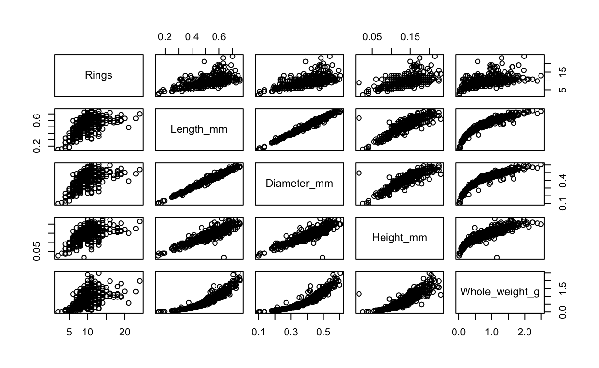
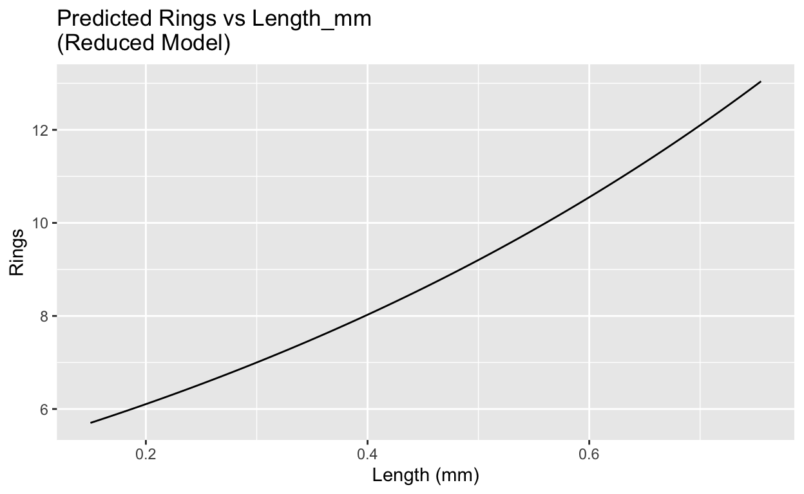

Introduction
On this web page you will find the homework, practical exercises and weekly quiz for Unit 8 of BIO144.
All other information for the course is on the OLAT course webpages, and web pages linked to from there: OLAT BIO144 Info. Hub
Homework
All homework is for your own practice and learning. It will not be marked or graded.
Homework common to all weeks
Review the material from the lecture(s) this week. Make sure you understand the concepts and ideas presented. Ensure you can follow any mathematical or statistical explanations. Ensure you can do the R that is needed for the week’s learning objectives.
When you find things you don’t understand or have trouble doing (e.g., in R), make a note of these. You can then ask a teaching assistant (TA) for help during the practical session, and you can ask on the Discussion Forum on OLAT. You can also ask questions during the lectures.
Reading
- Chapter 7 of Getting Started with R, by Beckerman, Childs, and Petchey.
- Chapter 8 of First Edition The New Statistics in R by Hector. This introduces the general concept of generalised linear models quite nicely. There is a section on the Box-Cox transformation which you might find interesting, but is not really an integral part of generalised linear models. (In the Second Edition, this is Chapter 15.)
- Section 9.4 of Chapter 9 of First Edition The New Statistics in R by Hector. This offers a different perspective, and slightly more complex one than in GSwR, on analysing count data with a poisson GLM. (In this Second Edition, this is Chapter 16.)
Practical part 1
In this exercise, you will work through two-way analysis of variance.
The steps to follow are, as usual:
- Get introduced to and think about the biological question.
- Prepare a script, load the data, and make some basic checks on the dataset.
- Visualise to answer the question.
- Fit an appropriate model.
- Check the assumptions of the model.
- Interpret the model.
- Make a visualisation of the data, good for publication.
- Write a sentence describing your findings.
- Critique and reflection
0. The biological question
Abalone (marine snails) are endangered in some parts of the world. Knowing the age of an abalone is important for conservation efforts. The age of an abalone can be estimated by counting the number of rings on its shell, similar to counting tree rings. However, this requires killing the abalone. A non-lethal method to estimate age is to use measurements of the abalone’s physical characteristics, such as shell length and shell diameter. We are interested in whether a suite of explanatory variables are associated with abalone age. And how much variation in age can be explained by these variables.
This is a real dataset originally collected in Tasmania for fisheries research, made widely available via the UCI Machine Learning Repository. Although some variables are labelled as millimetres in the dataset documentation, the numerical values are clearly rescaled. We therefore treat these measurements as being on an arbitrary but consistent length scale, and avoid interpreting coefficients in literal physical units.
The dataset has in each row an individual abalone, and has the following variables:
Rings: Number of rings on the abalone shell (used to estimate age)Sex: Sex, with three categories: ‘M’ (male), ‘F’ (female), and ‘I’ (infant, i.e., not yet sexually mature)Length_mm: Length of the abalone shell (in mm)Diameter_mm: Diameter of the abalone shell (in mm)Height_mm: Height of the abalone shell (in mm)Whole_weight_g: Whole weight of the abalone (in grams)Shuck_weight_g: Weight of the abalone meat (in grams)Viscera_weight_g: Weight of the abalone viscera (in grams)Shell_weight_g: Weight of the abalone shell (in grams)
Note that we should not use variables that can only be measured after
killing the abalone (e.g., weights) to predict age, as we want a
non-lethal method. Therefore, we will only use Diameter_mm,
Length_mm, Height_mm, and
Whole_weight_g as explanatory variables.
The response variable is Rings, which is a count of the
number of rings on the shell. Therefore we know already that we should
not use a linear model to analyse this data, but rather a generalised
linear model with a Poisson error distribution would be a good starting
point.
1. Prepare a script, load the data, and make some basic checks on the dataset.
As well as the usual preliminaries, please make a version of the dataset with only the variables we will use in the analysis:
2. Visualise to answer the question.
Make all possible pairwise scatterplots of the variables to look for obvious relationships.

Recall that back in multiple regression we learned about collinearity and that we could measure the potential importance with a variance inflation factor. VIFs are still useful in Poisson GLMs because they tell us whether predictors are strongly correlated with each other. High VIFs warn us that coefficient estimates may be unstable and hard to interpret, even if the model fits well.
Nevertheless, we can see from the pairwise scatterplots that all four explanatory variables appear to be associated with Rings. Therefore, we will need to be very careful when interpreting the results of a multiple regression or GLM with all four explanatory variables included.
Anyway, it looks like the answer to the biological question is likely to be ‘yes’: there are associations between abalone age (Rings) and the explanatory variables. But just how strong are these associations, and which variables are most important? And how useful for predicting age? Let’s find out by fitting a Poisson GLM and inspecting it in detail.
3. Fit an appropriate model.
We will fit a Poisson GLM with Rings as the response variable and all four explanatory variables included. Make this model. Do not include any interaction terms.
4. Check the assumptions of the model.
Make the four standard diagnostic plots for the Poisson GLM you have fitted.
So, we have a problem: the QQ-plot shows that the largest residuals are much larger than expected under the Poisson model. This suggests that the data may be overdispersed relative to the Poisson distribution, or that the model is not capturing all relevant structure in the data.
This is very interesting, since based on the qq plot we expected overdispersion, but the calculated ratio is less than 1, suggesting underdispersion. This discrepancy can occur because the qq plot is sensitive to extreme residuals, while the deviance ratio summarizes overall fit. It suggest that for some parts of the residual distribution, the model fits poorly (extreme residuals), while for other parts the model fits better than would be expected! Complicated. And this would need modelling of greater sophistication to resolve properly. Let us continue with the current model and see how well it performs.
5. Interpret the model.
Recall that we need to be very careful when interpreting the coefficients of this model, because the explanatory variables are strongly correlated with each other (collinearity).
Now make a model without the Height_mm and
Diameter_mm variables, since these were the only
significant predictors in the full model. Fit this reduced model and
inspect the summary.
##
## Call:
## glm(formula = Rings ~ Length_mm + Whole_weight_g, family = poisson,
## data = abalone_data)
##
## Coefficients:
## Estimate Std. Error z value Pr(>|z|)
## (Intercept) 1.50156 0.13942 10.770 < 2e-16 ***
## Length_mm 1.36788 0.37754 3.623 0.000291 ***
## Whole_weight_g 0.04047 0.08526 0.475 0.634987
## ---
## Signif. codes: 0 '***' 0.001 '**' 0.01 '*' 0.05 '.' 0.1 ' ' 1
##
## (Dispersion parameter for poisson family taken to be 1)
##
## Null deviance: 335.94 on 399 degrees of freedom
## Residual deviance: 222.98 on 397 degrees of freedom
## AIC: 1864
##
## Number of Fisher Scoring iterations: 4You should see that Length_mm is now significant, while
Whole_weight_g remains non-significant. This illustrates
how collinearity can affect the significance of predictors in a multiple
regression or GLM.
What about if we make a model with only Whole_weight_g
as the explanatory variable? Do this and inspect the summary.
##
## Call:
## glm(formula = Rings ~ Whole_weight_g, family = poisson, data = abalone_data)
##
## Coefficients:
## Estimate Std. Error z value Pr(>|z|)
## (Intercept) 1.98889 0.03362 59.16 <2e-16 ***
## Whole_weight_g 0.32559 0.03225 10.10 <2e-16 ***
## ---
## Signif. codes: 0 '***' 0.001 '**' 0.01 '*' 0.05 '.' 0.1 ' ' 1
##
## (Dispersion parameter for poisson family taken to be 1)
##
## Null deviance: 335.94 on 399 degrees of freedom
## Residual deviance: 236.48 on 398 degrees of freedom
## AIC: 1875.5
##
## Number of Fisher Scoring iterations: 4Wow! Now Whole_weight_g is highly significant. This
again shows how collinearity can affect the interpretation of
predictors. When considered alone, Whole_weight_g appears
strongly associated with Rings, but when considered alongside the other
correlated predictors, its significance disappears.
This is a classic example of the challenges posed by collinearity in multiple regression and GLMs. It highlights the importance of careful model interpretation and consideration of predictor correlations.
In summary, we have found some associations, but the strong collinearity among predictors makes it difficult to draw clear conclusions about the individual associations of each variable on abalone age (Rings).
How good is the model?
To assess the overall fit of the model, we can look at measures such as the deviance, AIC, and pseudo-R² values. However, interpreting these in the context of a Poisson GLM with collinear predictors can be challenging.
Another method is to plot the predicted values against the observed values to visually assess the fit. Make this graph and the use linear regression to add a line of best fit. What do you expect the intercept and slope to be if the model is good? And what do you expect the r-squared to be if the model is good?
6. Make a visualisation of the data, good for publication.
Since the aim is to predict abalone age (Rings) from the explanatory variables, a useful plot would be to show the relationship between the predicted Rings from the model and the observed Rings. We have already made this plot above. You could enhance it further by adding confidence intervals or prediction intervals around the regression line, and by improving the aesthetics for publication quality.
If we wanted to visualise the effect of individual explanatory variables, we could create conditions plots to visualise the effects of each predictor while holding others constant.
For example:
new_data <- expand.grid(
Length_mm = seq(min(abalone_data$Length_mm), max(abalone_data$Length_mm), length.out = 100),
Diameter_mm = mean(abalone_data$Diameter_mm),
Height_mm = mean(abalone_data$Height_mm),
Whole_weight_g = mean(abalone_data$Whole_weight_g)
)
predictions <- predict(ab_glm, newdata = new_data, type = "response")
new_data <- new_data |>
mutate(Predicted_Rings = predictions)
ggplot(new_data, aes(x = Length_mm, y = Predicted_Rings)) +
geom_line() +
labs(title = "Predicted Rings vs Length_mm\n(Full Model)",
x = "Length (mm)",
y = "Rings")And we instantly see the unlikely result that as Length increases, predicted Rings decreases. This is a consequence of the collinearity among predictors, and shows how difficult it is to interpret individual predictor effects in the presence of strong collinearity.
Let’s make the same graph for the model with only
Length_mm and Diameter_g as predictors:

And now we have a more sensible result: as Length increases, predicted Rings also increases.
This shows just how dangerous collinearity can be for interpreting the effects of individual predictors in multiple regression and GLMs.
7. Write reporting sentences.
We could write something like this:
Based on the Poisson GLM analysis of the abalone dataset, we found that both Diameter_mm and Height_mm were significantly associated with the number of Rings, indicating that larger abalones tend to be older. However, due to strong collinearity among the explanatory variables, interpreting the individual effects of Length_mm and Whole_weight_g was challenging. The model’s predictions aligned well with observed values, suggesting reasonable overall fit, but caution is warranted when interpreting individual predictor effects due to collinearity issues. In summary, we found that easily measurable physical characteristics of abalones can provide useful information about their age, but further investigation is needed to disentangle the effects of correlated predictors.
8. Critique and reflection
We have strayed very much into a situation where we learned more about the challenges of collinearity in multiple regression and than we did about analysing count data. And much of what we learned about collinearity was already known and applies equally to linear and other models.
Practical part 2
Let us again consider the abalone dataset, but simplify by only using
one explanatory variable, Length_mm, to predict the
response variable Rings. Then we can focus on something
important: the meaning of the slope estimates in a Poisson GLM.
First make a model with only Length_mm as the
explanatory variable. Then look at the summary of this model using
summary().
The next question is a bit tricky…
In a Poisson GLM we use a log link, which means the model does not add a fixed number of rings for each increase in length. Instead, the coefficient tells us how the expected number of rings is multiplied. A slope of 1.53 means that increasing length by 1 mm multiplies the expected number of rings by (1.53) , not that it adds 1.53 rings. So if an abalone has 10 rings at 0.5 mm, increasing its length to 1.5 mm (an increase of 1 mm) gives an expected number of about 10 = 46 rings, not 15.3.
Weekly Quiz